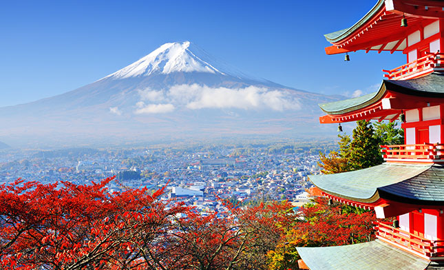

where it preferred to avoid taking an absolute position, Japan decided to express its opinion and support Israel, as part of the right granted to it to defend itself. But the Japanese were not satisfied with just that - during the first days of the fighting, the Japanese Foreign Minister came for an official visit to Israel and met with the Israeli Foreign Minister. In the streets of Tokyo and other large cities there were a number of demonstrations in support of Israel, which represents the strong identification of the Japanese people with the State of Israel.
A rich and ancient culture, diverse cuisine, magnificent temples, large cities that offer a fascinating combination between a glorious past and modern life and a fascinating and unique human mosaic. The Arashiyama Bamboo Forest in Kyoto is undoubtedly one of the must-see sites in Japan. During your visit to the forest, located in the northwestern part of Kyoto, you can walk or ride a rickshaw on the wide path through the bamboo trees, which rise to a height of tens of meters, witness beautiful temples and feel as if you have entered a new and wonderful world. Another must-see is Mount Fuji, the highest mountain in Japan, which is considered one of its iconic symbols. You should qualify for the top of the mountain at sunrise to enjoy an amazing sight and a breathtaking view. Of course, you shouldn't miss the big and bustling cities in Japan, including Tokyo, Kyoto, Nara, Osaka and Hiroshima.
Back to Homepage